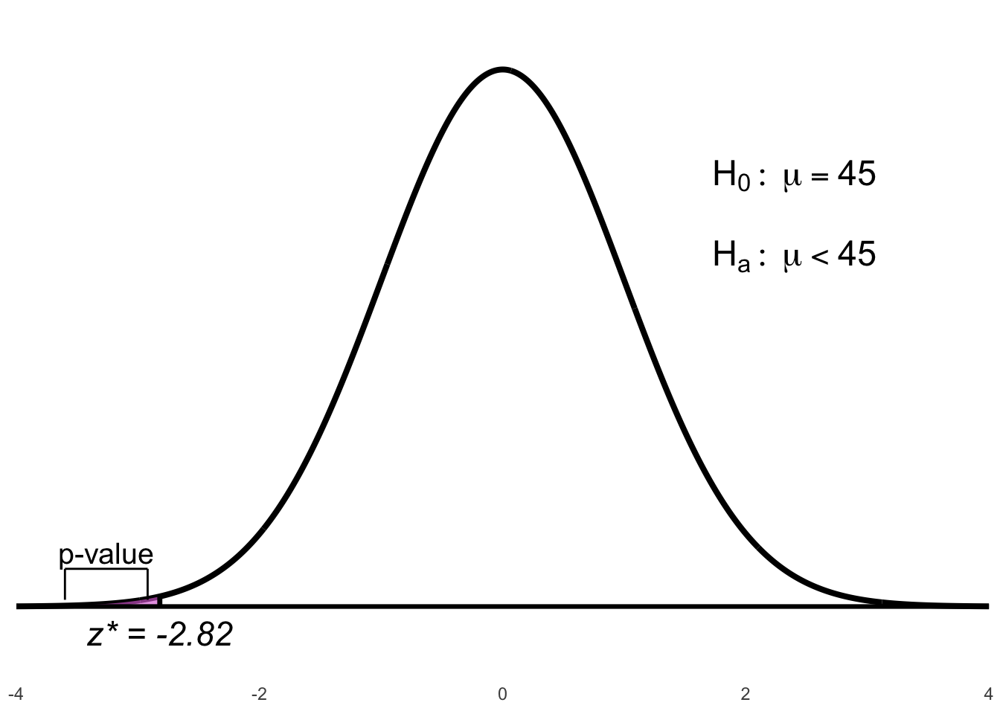
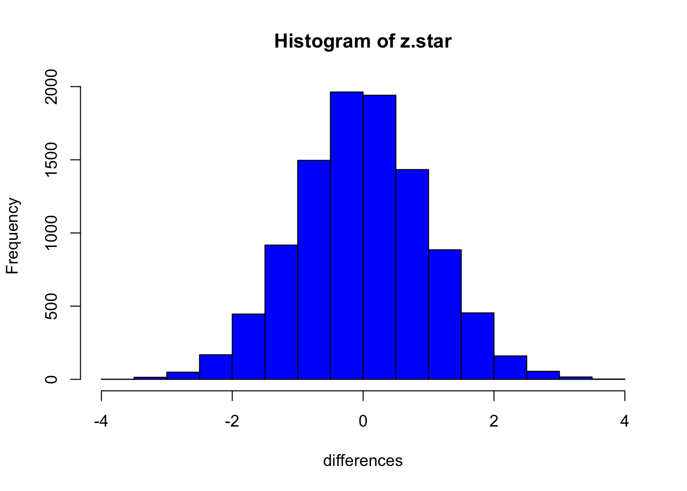

Chapter 6 Hypothesis Tests
6.1 Introduction
A hypothesis test is a statistical method used to make inferences about a population based on sample data. It involves formulating a null hypothesis and an alternative hypothesis, calculating a test statistic, and determining the likelihood of observing the data under the null hypothesis. Each of these terms will be explained in more detail below.
Definition 6.1 An inferential procedure to determine whether there is sufficient evidence to suggest a condition for a population parameter using statistics from a sample.
The main goal of hypothesis testing is to assess the strength of evidence against a null hypothesis, which is a statement of no effect or no difference. The alternative hypothesis represents the research hypothesis or the condition we are interested in testing.
One of the steps in hypothesis testing is to calculate a p-value, which quantifies the evidence against the null hypothesis. The p-value is the probability of observing a test statistic at least as extreme as the one calculated from the sample data, assuming that the null hypothesis is true.
Definition 6.2 The p-value of a hypothesis test is the probability of observing a test statistic at least as extreme as the one calculated in step 3, assuming that the null hypothesis is true by pure chance alone.
The procedure to conduct any hypothesis often follows a standard sequence of steps.
Steps
[Reorder and start with checking assumptions first?]
Decide on a level of significance (\(\alpha\)).
State the null hypothesis (\(H_0\)) and the alternative hypothesis (\(H_a\)).
Calculate the appropriate test statistic.
Use the test statistic and a reference distribution to calculate a p-value.
Compare p-value to \(\alpha\) to make a conclusion.
We will now examine each of the steps above in more detail.
Step 1: Decide on a Level of Significance (\(\alpha\))
This is a threshold for decision making which the study or researcher is willing to implement. Depends on tolerance for consequences of errors, sample size, nature of the study, and variability.
Some common Common values are \(\alpha = 0.10\), \(\alpha = 0.05\), \(\alpha = 0.01\).
Step 2: State the Null Hypothesis and the Alternative Hypothesis
We will use the following notation for describing the null and alternative hypotheses:
A hypothesis test is a comparison between two mutually exclusive hypotheses which are:
| Null hypothesis \((H_0)\) | : | Represents the current belief or the conservative belief or the status quo. It is a statement of no effect or no difference. |
| Alternative hypothesis \((H_a)\) | : | Represents the research hypothesis, or what you are requested to test or trying to prove. |
Our choices for the null and alternative hypothesis are:
| \(H_0: \Theta = \Theta_0\) | vs. | \(H_a: \Theta > \Theta_0\) |
| \(H_0: \Theta = \Theta_0\) | vs. | \(H_a: \Theta < \Theta_0\) |
| \(H_0: \Theta = \Theta_0\) | vs. | \(H_a: \Theta \neq \Theta_0\) |
Remark. The first two hypothesis tests above are referred to as one-sided or one-tailed tests. and the third hypothesis test is referred to as a two-sided or two-tailed test.
Remark. The one-sided hypothesis test \[\begin{array}{lcl} H_0: \Theta = \Theta_0 & \quad & H_a: \Theta > \Theta_0\\ \end{array}\] is equivalent to \[\begin{array}{lcl} H_0: \Theta \leq \Theta_0 & \quad & H_a: \Theta > \Theta_0\\ \end{array}\]
and the other one-sided hypothesis test
\[\begin{array}{lcl} H_0: \Theta = \Theta_0 & \quad & H_a: \Theta < \Theta_0\\ \end{array}\] is equivalent to \[\begin{array}{lcl} H_0: \Theta \geq \Theta_0 & \quad & H_a: \Theta < \Theta_0\\ \end{array}\]
Step 3: Calculate an appropriate test statistic
Depends on the hypothesis test conducted and the information available.
Definition 6.3 \[\text{test statistic} = \frac{\text{(a statistic)} - \text{(hypothesized value of parameters under } H_0 \text{)}}{\text{standard error of statistic}}\]
The test statistic follows a reference distribution. Common distributions which thetest statistic follows are the standard normal distrubution, \(t\)-distribution, \(F\)-distribution and \(\chi^2\)-distribution.
Step 4: Calculate the p-value
We use the test statistic, reference distribution, and refer back to \(H_a\).


Figure 6.1: Right-tailed test: p-value is the area to the right of the test statistic


Figure 6.2: Left-tailed test: p-value is the area to the left of the test statistic

Figure 6.3: Two-tailed test: p-value is the total area in both tails beyond ±test statistic
Step 5: Compare p-value to level of significance \(\alpha\) and make a conclusion
If the p-value \(< \alpha\), we say there is sufficient evidence against \(H_0\) and the hypothesis test rejects \(H_0\) in favor of \(H_a\).
If the p-value \(> \alpha\), thenwe say there is insufficient evidence against \(H_0\) and we do not reject \(H_0\) (in this situation we can also say fail to reject \(H_0\)).
About the p-value of the test statistics
The p-value is a conditional probability.
It is not the probability that \(H_0\) (null hypothesis: current belief) is true.
It is: P(observed statistic value — \(H_0\)). Given \(H_0\) (the null hypothesis), because \(H_0\) gives the parameter values that we need to find required probability.
The p-value serves as a measure of the strength of the evidence against the null hypothesis (but it should not serve as a hard and fast rule for decision).
If the p-value = 0.03 (for example) all we can say is that there is 3% chance of observing the statistic value we actually observed (or one even more inconsistent with the null value).
The p-value is the chance (the proportion) of getting a, for instance, \(\hat{p}\) as far as or further from \(H_0\) than the value observed.
The p-value is the probability of getting at least something (e.g., sample proportion \(\hat{p}\)) more extreme (e.g., unusual, unlikely, or rare) than what we have already found (our observed value of \(\hat{p}\)) that provide even stronger evidence against \(H_0\).
The more extreme the z-score (large in absolute values) are the ones that denote farther departure of the observed value (e.g., our \(\hat{p}\)) from the parameter value (\(p_0\)) in \(H_0\).
In the one-sided test, e.g., \(H_a : p > p_0\), p-value is one-tailed probability. This is the probability that sample proportion \(\hat{p}\) falls at least as far from \(p_0\) in one direction as the observed value of \(\hat{p}\).
In the two-sided test, e.g., \(H_a : p \ne p_0\), p-value is two-tailed probability. This is the probability that sample proportion \(\hat{p}\) falls at least as far from \(p_0\) in either direction as the observed value of \(\hat{p}\).
The probability, computed assuming that \(H_0\) is true, that the test statistic would take a value as extreme or more extreme than that actually observed is called the P-value of the test. The smaller the P-value, the stronger the evidence against \(H_0\) provided by the data.
Small P-values are evidence against \(H_0\), because they say that the observed result is unlikely to occur when \(H_0\) is true. Large P-values fail to give evidence against \(H_0\).
The P-value Scale
If P-value \(<\) 0.001, we have very strong evidence against \(H_0\).
If 0.001 \(\leq\) P-value \(<\) 0.01, we have strong evidence against \(H_0\).
If 0.01 \(\leq\) P-value \(<\) 0.05, we have evidence against \(H_0\).
If 0.05 \(\leq\) P-value \(<\) 0.075, we have some evidence against \(H_0\).
If 0.075 \(\leq\) P-value \(<\) 0.10, we have slight evidence against \(H_0\).
Use p-value Method to Make a Decision (Reject or Fail to Reject \(H_0\))
But how small is small p-value?
We would need to choose an \(\alpha\)-level (significance-level): a number
such that if:
\(P\text{–value} \leq \alpha\)-level, we reject \(H_0\); We can conclude \(H_a\) (we have evidence to support our claim). Often we phrase as a statistically significant result at that specified \(\alpha\)-level.
\(P\text{–value} > \alpha\)-level, we fail to reject \(H_0\); We cannot conclude \(H_a\) (we have not enough evidence to support our claim; thus, \(H_0\) is plausible - We do not accept \(H_0\)). Often we phrase as the result is not statistically significant at that specified \(\alpha\)-level.
The default \(\alpha\)-level (significance-level) is typically \(\alpha = 0.05\) (but it can be different based on the context of the study - it is usually not higher than 0.10).
The p-value in the previous example was extremely small (less than
0.0001). That is a strong evidence to suggest that more than 5% of
children have genetic abnormalities. However, it does not say that the
percentage of sampled children with genetic abnormalities was “a lot
more than 5%”. That is, the p-value by itself says nothing about how
much greater the percentage might be. The confidence interval provides
that information.
To assess the difference in practical terms, we should also construct a
confidence interval:
\[0.1198 \pm (1.96 \times 0.0166)\] \[0.1198 \pm 0.0324\] \[(0.0874,\ 0.1522)\]
Interpretation: We are 95% Confident that the true percentage of
children with genetic abnormalities is between 8.74% and 15.22%.
95% CI for \(p\): (9.1%, 15.6%) – We are 95% confident that the true
percentage of all children that have genetic abnormalities is between
approximately 9.1% and 15.6%. Since both values of this CI are more than
the hypothesized value of \(p = 0.05\) (5%), we can further infer that
this true percentage is more than 5%.
Do environmental chemicals cause congenital abnormalities?
We do not know that environmental chemicals cause genetic abnormalities. We merely have evidence that suggests that a greater percentage of children are diagnosed with genetic abnormalities now, compared to the 1980s.
More About P-values
Big p-values just mean that what we have observed is not surprising. It means that the results are in line with our assumption that the null hypothesis models the world, so we have no reason to reject it.
A big p-value does not prove that the null hypothesis is true.
When we see a big p-value, all we can say is: we cannot reject \(H_0\) (we fail to reject \(H_0\)) – we cannot conclude \(H_a\) (We have no evidence to support \(H_a\)).
6.2 One Sample Hypothesis Tests
6.2.1 On a Population Mean
6.2.1.1 When \(\sigma\) is Known
To test \(H_0 : \mu = \mu_0\), in the situation where the population standard deviation \(\sigma\) is known, our options for the null and alternative hypotheses are:
\(H_0: \mu = \mu_0\) vs. \(H_a: \mu > \mu_0\)
\(H_0: \mu = \mu_0\) vs. \(H_a: \mu < \mu_0\)
\(H_0: \mu = \mu_0\) vs. \(H_a: \mu \neq \mu_0\)
We calculate the one-sample \(z\)-statistic:
\[z^{*} = \frac{\bar{x} - \mu_0}{\sigma / \sqrt{n}} \sim N(0,1)\]
The reference distribution is the standard normal distribution.
In terms of a variable \(Z\) having the standard normal distribution, the p-value for a test of \(H_0\) against:
\(H_a: \mu > \mu_0\) is \(P(Z > z^{*})\)
\(H_a: \mu < \mu_0\) is \(P(Z < z^{*})\)
\(H_a: \mu \ne \mu_0\) is \(2P(Z > |z^{*}|)\)
Example 6.1 Deer are a common sight on the UTM campus. Suppose an ecologist is interested in the average mass of adult white-tailed does (female deer) around the Mississauga campus to determine whether they are healthy for the upcoming winter. The ecologist captures a sample of 36 adult females around the UTM and measures the average mass of this sample to be 42.53 kg.
From previous studies conducted in the area, the average mass of healthy does was reported to be 45 kg. Conduct a hypothesis test at the 5% significance level to determine whether the mass of does around UTM has decreased. Assume the standard deviation is known to be 5.25 kg.
1. Level of significance. \(\alpha = 0.05\)
2. State the null and alternative hypotheses. \[H_0: \mu = 45 \qquad H_a: \mu < 45\]
3. Calculate appropriate test statistic.
Given: \[n = 36, \quad \bar{x} = 42.53, \quad \sigma = 5.25\]
Since \(\sigma\) is known, the test statistic is: \[z^* = \frac{\bar{x} - \mu_0}{\sigma / \sqrt{n}} = \frac{42.53 - 45}{5.25/\sqrt{36}} = -2.82\]
Reference distribution: standard normal
4. Calculate p-value
\[\text{p-value} = P(Z < -2.82) \approx 0.0024\]
Figure 6.4: Left-tailed p-value for the test statistic \(z^* = -2.82\)
5. Compare p-value with level of significance \(\alpha\) and make a conclusion:
\[0.0024 < 0.05 \Rightarrow \text{p-value} < \alpha\]
There is sufficient evidence at the 5% level of significance to reject the null that does this winter weigh the same as in the past and to conclude the alternative that does this winter weigh less than 45 kg.
R code:
# Find test stat
z_test_stat = (42.53 - 45) / (5.25 / sqrt(36))
z_test_stat
[1] -2.822857
# Find the p-value
# Since the alternative is Ha : mu < 45
p-value = pnorm(z_test_stat)
[1] 0.00237989Note: The pnorm() function in R, by default, returns the cumulative
probability (area) to the left of the given value.
R code: Using BSDA package
# Using the BSDA library. install BSDA if it is not already installed.
# install.packages("BSDA")
> library(BSDA)
> # Conduct the z-test with the zsum.test function
> zsum.test(mean.x = 42.53, sigma.x = 5.24, n.x = 36, mu = 45, alternative = "less")
One-sample z-Test
data: Summarized x
z = -2.8282, p-value = 0.00234
alternative hypothesis: true mean is less than 45
95 percent confidence interval:
NA 43.96651
sample estimates:
mean of x
42.53 Interpretation:
There is sufficient evidence at the 5% level of significance to reject the null hypothesis. We conclude that the average mass of does this winter is significantly less than 45 kg.
Example 6.2 Diet colas use artificial sweeteners to avoid sugar. These sweeteners gradually lose their sweetness over time. Manufacturers therefore test new colas for loss of sweetness before marketing them. Trained tasters sip the cola along with drinks of standard sweetness and score the cola on a “sweetness score” of 1 to 10. The cola is then stored for a month at high temperature to imitate the effect of four months’ storage at room temperature. Each taster scores the cola again after storage. This is a matched pairs experiment. Our data are the differences (score before storage minus score after storage) in the tasters’ scores. The bigger these differences, the bigger the loss of sweetness.
Suppose we know that for any cola, the sweetness loss scores vary from taster to taster according to a Normal distribution with standard deviation \(\sigma = 1\). The mean \(\mu\) for all tasters measures loss of sweetness.
The following are the sweetness losses for a new cola as measured by 10 trained tasters:
\[2.0, 0.4, 0.7, 2.0, -0.4, 2.2, -1.3, 1.2, 1.1, 2.3\]
Are these data good evidence that the cola lost sweetness in storage?
Solution
\(\mu\) = mean sweetness loss for the population of all tasters.
Step 1: State hypotheses. \[\begin{aligned}
H_0 &: \mu = 0 \\
H_a &: \mu > 0
\end{aligned}\] Step 2: Test statistic:
\(z_\star = \dfrac{\bar{x} - \mu_0}{\sigma / \sqrt{n}} = \dfrac{1.02 - 0}{1 / \sqrt{10}} = 3.23\)
Step 3: P-value. \(P(Z > z_\star) = P(Z > 3.23) = 0.0006\)
Step 4: Conclusion. We would rarely observe a mean as large as 1.02
if \(H_0\) were true. The small p-value provides strong evidence against
\(H_0\), supporting \(H_a: \mu > 0\). That is, the mean sweetness loss is
likely positive.
R code (Simulation)
# n = sample size;
n<-10;
mu.zero<-0;
sigma<-1;
sigma.xbar<-sigma/sqrt(n);
# x bar = sample mean with 10 obs;
x.bar<-rnorm(1,mean=mu.zero,sd=sigma.xbar);
x.bar;
## [1] 0.3265859
# z.star = test statistic;
z.star<-(x.bar-mu.zero)/sigma.xbar;
z.star;
## [1] 1.032755R code (10,000 Simulations)
n <- 10;
mu.zero <- 0;
sigma <- 1;
sigma.xbar <- sigma / sqrt(n);
# x bar = sample mean with 10 obs;
# m = number of simulations;
m <- 10000;
x.bar <- rnorm(m, mean = mu.zero, sd = sigma.xbar);
# z.star = test statistic;
z.star <- (x.bar - mu.zero) / sigma.xbar;
hist(z.star, xlab = "differences", col = "blue");
Figure 6.5: Histogram of \(z^\star\) values from 10,000 simulations under \(H_0\)
R code (Empirical p-value)
## P-value
p_value <- length(z.star[z.star > 3.23]) / m;
p_value
## [1] 8e-04Example 6.3 The National Center for Health Statistics reports that the systolic blood pressure for males 35 to 44 years of age has mean 128 and standard deviation 15.
The medical director of a large company looks at the medical records of 72 executives in this age group and finds that the mean systolic blood pressure in this sample is \(\bar{x} = 126.07\). Is this evidence that the company’s executives have a different mean blood pressure from the general population?
Suppose we know that executives’ blood pressures follow a Normal distribution with standard deviation \(\sigma = 15\).
Solution: Let \(\mu\) be the mean systolic blood pressure of the executive population.
State hypotheses:
\[\begin{aligned} H_0 &: \mu = 128 \\ H_a &: \mu \ne 128 \end{aligned}\]Test statistic:
\[z^{*} = \frac{\bar{x} - \mu_0}{\sigma / \sqrt{n}} = \frac{126.07 - 128}{15 / \sqrt{72}} = -1.09\]P-value:
\[2P(Z > |z^{*}|) = 2P(Z > 1.09) = 2(1 - 0.8621) = 0.2758\]Conclusion:
More than 27% of the time, a simple random sample of size 72 from the general male population would have a mean blood pressure at least as far from 128 as that of the executive sample. The observed \(\bar{x} = 126.07\) is therefore not good evidence that executives differ from other men.
Example 6.4 Consider the following hypothesis test:
\[\begin{aligned} H_0 &: \mu = 20 \\ H_a &: \mu < 20 \end{aligned}\]
A sample of 50 provided a sample mean of 19.4. The population standard deviation is 2.
Compute the value of the test statistic.
What is the p-value?
Using \(\alpha = 0.05\), what is your conclusion?
Solution:
Test statistic: \[z^{*} = \frac{\bar{x} - \mu_0}{\sigma / \sqrt{n}} = \frac{19.4 - 20}{2 / \sqrt{50}} = -2.1213\]
P-value: \[P(Z < z^{*}) = P(Z < -2.1213) = 0.0169\]
Conclusion:
Since the p-value \(= 0.0169 < \alpha = 0.05\), we reject \(H_0 : \mu = 20\). We conclude that \(\mu < 20\).
Example 6.5 Consider the following hypothesis test:
\[\begin{aligned} H_0 &: \mu = 25 \\ H_a &: \mu > 25 \end{aligned}\]
A sample of 40 provided a sample mean of 26.4. The population standard deviation is 6.
Compute the value of the test statistic.
What is the p-value?
Using \(\alpha = 0.01\), what is your conclusion?
Solution:
Test statistic: \[z^{*} = \frac{\bar{x} - \mu_0}{\sigma / \sqrt{n}} = \frac{26.4 - 25}{6 / \sqrt{40}} = 1.4757\]
P-value: \[P(Z > z^{*}) = P(Z > 1.4757) = 0.0700\]
Conclusion:
Since the p-value \(= 0.0700 > \alpha = 0.01\), we cannot reject \(H_0 : \mu = 25\).
We conclude that we don’t have enough evidence to claim that \(\mu > 25\).
Example 6.6 Consider the following hypothesis test:
\[\begin{aligned} H_0 &: \mu = 15 \\ H_a &: \mu \ne 15 \end{aligned}\]
A sample of 50 provided a sample mean of 14.15. The population standard deviation is 3.
Compute the value of the test statistic.
What is the p-value?
Using \(\alpha = 0.05\), what is your conclusion?
Solution:
Test statistic: \[z^{*} = \frac{\bar{x} - \mu_0}{\sigma / \sqrt{n}} = \frac{14.15 - 15}{3 / \sqrt{50}} = -2.0034\]
P-value: \[2P(Z > |z^{*}|) = 2P(Z > |{-2.0034}|) = 2P(Z > 2.0034) = 0.0451\]
Conclusion:
Since P-value \(= 0.0451 < \alpha = 0.05\), we reject \(H_0 : \mu = 15\).
We conclude that \(\mu \ne 15\).
Confidence Interval Interpretation:
The 95% confidence interval for \(\mu\) is: \[\bar{x} \pm z^{*} \left( \frac{\sigma}{\sqrt{n}} \right)\] \[14.15 \pm 1.96 \left( \frac{3}{\sqrt{50}} \right) = (13.3184,\ 14.9815)\]
Since the hypothesized value \(\mu_0 = 15\) falls outside this interval, we again reject \(H_0 : \mu = 15\).